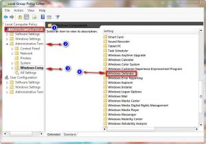
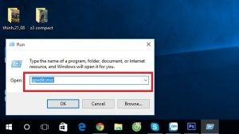
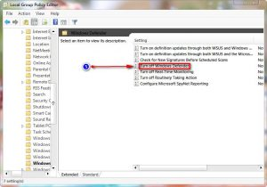
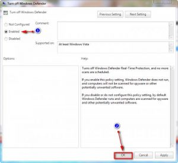
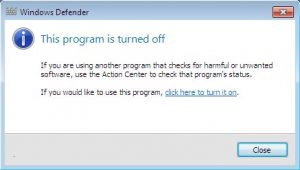

Cách Tắt Windows Defender Trên Windows 10
Cách Tắt Windows Defender Trên Windows 10
Bước 1: Bạn chuột phải vào nút Windows dưới góc màn hình, chọn Run như hình bên dưới

Bước 2: Gõ lệnh gpedit.msc rồi bạn nhấn Enter

Bước 3: Tại cửa sổ local group policy editor hiện ra. Bạn chọn computer configuration >> administrative templates >>> Windows components và bạn nhấp đúp chuột trái vào dòng chữ Windows defender.
Bước 4: Bạn bấm tiếp tục nhấn vào đúp chuột vào dòng chữ Turn off Windows defender

Bước 5: Hiện cửa sổ Tum off Windows defender, hiện ra bạn chọn vào hình tròn bên cạnh dòng chữ Enabled rồi bạn bấm nút OK

Bước 6 : Lúc này phần mềm Windows defender đã được tắt, để kiểm tra các bạn làm như sau :
Bạn hãy nhấn nút Start hoặc phím Windows trên bàn phím của bạn. Bạn nhập dòng lệnh Windows defender vào khung tìm kiếm rồi nó hiện dòng chữ windows defender trong kết quả hiện lên bấm vào
Bước 7: Khi hoàn thiện xong, nó hiện thông báo this app is turned off by group plicy đó là bạn đã tắt Windows defender thành công rồi đó. Qua bài viết này mình hi vọng nó sẽ giúp được các bạn cách tắt Windows defender …

Nguồn: Sưu tầm
Cần nạp mực hoặc sửa máy in tận nơi? Mực In Trường Phát có mặt trong 30 phút tại TP.HCM — in test trước khi tính tiền, bảo hành 1 tháng.
0908.327.123 · 0819.007.394 (Zalo cả 2 số)